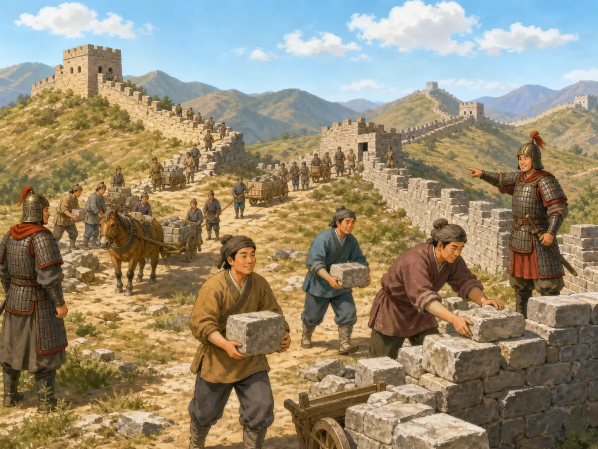
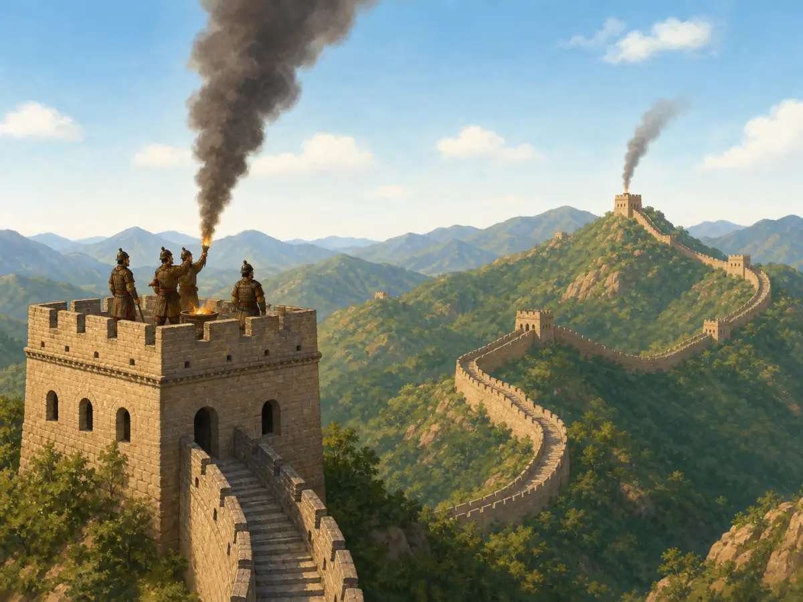
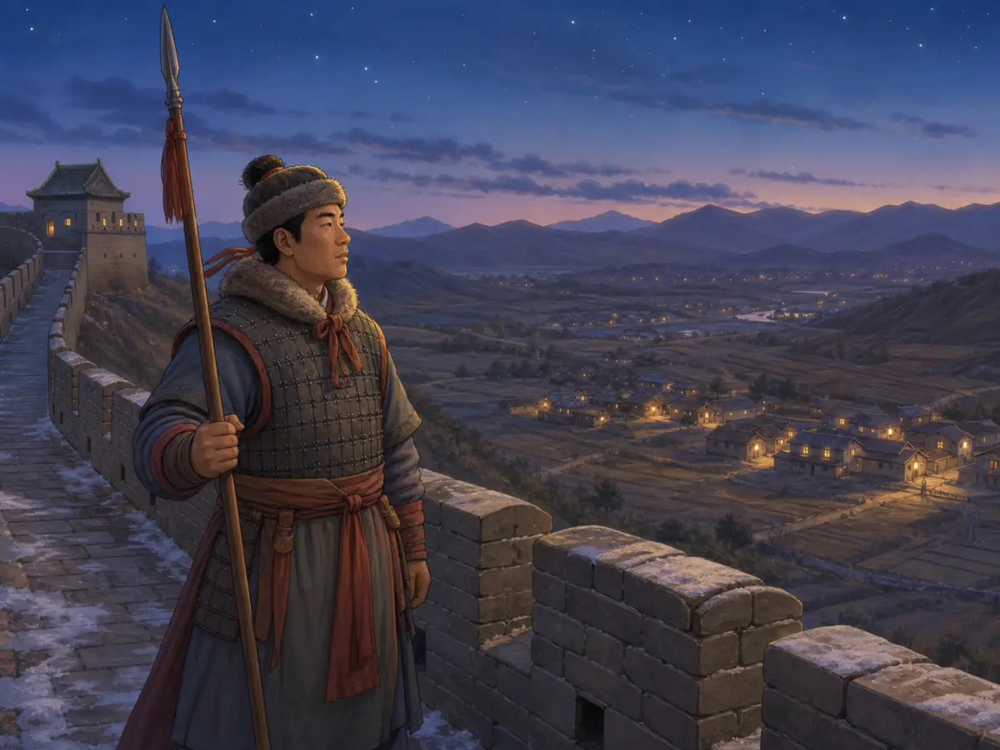

长城从来不只是一堵墙
The Great Wall Was Never Just One Wall
Page 1
哪一个才是长城？
Which One Is the Great Wall?
The Ming-style Wall near Beijing has brick walls and towers, but this appearance does not represent every place or period.
站在北京附近的长城上，你会看到高高的砖墙沿着山脊弯弯曲曲地伸向远方。墙上有石阶、垛口，还有一座座高高的敌楼。照片里、电影里最常见的长城，就是这个样子。
可是，如果一直往西走到甘肃，眼前的“长城”可能完全变了。那里没有高大的青砖，有些古老的城墙只剩下一道低低的土墙，颜色几乎和戈壁融在一起。有的墙用夯实的泥土和砂砾筑成，中间还夹着芦苇或树枝。
这两种都是长城。
这就是长城第一个很有意思的地方：它从来不是一个皇帝在某一天开始修、最后变成的一堵完整大墙。两千多年里，不同的人在不同地方修墙、废墙、接墙，又重新修墙。
Stand on the Great Wall near Beijing and you may see tall brick walls winding over green mountains. There are stone steps, square towers, and battlements along the top. This is the Great Wall that appears in postcards, movies, and photographs all over the world.
Now travel far west into the dry landscape of Gansu. There, part of the Great Wall may look completely different. Instead of a high brick wall, you might find a low brown ridge that almost melts into the desert. Some ancient sections were built from packed earth and gravel, with layers of reeds or branches mixed in.
Both are the Great Wall. That is the first surprise. The Great Wall was never one enormous wall built from one material at one time. It grew, disappeared, moved, and was rebuilt over more than two thousand years.
Page 2
中国还没有统一的时候
Before There Was One China

Workers carry stone to build a masonry Wall; this construction scene belongs more closely to a later period and does not represent the Qin Wall.
两千三百多年前，中国还分成许多国家。当时已经有一些国家修筑长墙，用来保护重要的土地和道路。有的墙防备邻国，有的守着北方边地。
后来，Qín Shǐhuáng · 建立秦朝、统一中国的第一位皇帝。统一中国。他的政府利用、修整和连接了一部分北方旧墙，还修了新的防线。
那些早期长城可不像今天北京附近的砖墙。古人常常有什么材料，就用什么材料。泥土可以一层一层夯得非常结实；到了干燥的西北，还能把砂砾、芦苇和枝条一层一层铺起来。
许多世纪以后，又有不同的王朝继续修筑和使用北方防线。到了Míng cháo · 1368年至1644年的中国朝代。，人们在许多重要关口和山地修建了高大的墙、城堡和敌楼。今天北京附近那些最有名的砖石长城，大多就是这个较晚时代留下来的。如果你能坐上一架时间机器去看长城，它的样子会一路不停地变化。
More than 2,300 years ago, China was divided into different states. Several of them built long walls to guard important land and roads. Some walls faced neighboring states. Others protected northern frontiers.
Then the First Emperor united China. His government repaired, extended, and joined parts of older northern walls to create a much larger line of defense.
Those early walls did not look like the famous brick Wall near Beijing. Builders often used the material under their feet. Earth could be packed down again and again until it became surprisingly hard. In dry western places, sand, gravel, reeds, and branches could be layered together.
Many centuries later, other rulers built new walls or repaired old ones. During the Míng cháo · 明朝 · The Chinese dynasty that lasted from 1368 to 1644., builders strengthened important northern routes with large walls, passes, forts, and towers. Much of the dramatic brick-and-stone Great Wall that visitors see around Beijing today comes from this much later time. So if you could travel through time, the “Great Wall” would keep changing in front of you.
Page 3
一堵墙自己什么也做不了
A Wall Could Not Work Alone

Beacons relay a signal along the Wall; signals, fuel, station positions, and speed varied across periods and conditions.
城墙可以挡住道路，却不会自己观察远处，也不会自己把消息送出去。所以，真正的长城其实是一整套东西。除了墙，还有士兵、关口、城堡、道路和烽火台。守军站在高处观察远方，发现危险以后，可以按照约定用烟或火发出信号。远处的下一座烽火台看见后，又可以继续把警报传下去。
关口也很重要。长长的防线上不可能每个地方都一样好走。有了墙和关口，人们就可以把许多来往集中到比较容易守住和检查的地方。
可是，关门并不是永远关着的。有时候，它也会打开。
A long wall was useful, but a wall by itself could not watch the horizon or carry a warning. People had to do that. The Great Wall system included soldiers, forts, guarded passes, roads, watch posts, and beacon towers. Some beacon towers stood where guards could see far across the countryside. If danger appeared, agreed signals could be sent with smoke or fire, allowing another station farther away to notice and pass the warning on.
The wall also helped control where people crossed. Instead of trying to guard every open path, soldiers could watch important gates and passes.
But a gate was not always closed. Sometimes it opened.
Page 4
关门打开以后
The Gate Opens

A guard looks toward a valley settlement; life beside the Wall included farming, herding, travel, and family life as well as defense and battle.
想象一个没有战争的日子。关口上的士兵还在守望，可城门下面已经有人来来往往。有人牵着马和牲畜，有人带着粮食、布匹和其他货物，还有商人、使者和旅行的人从这里经过。
古代北方的一些边地确实开过市场，不同人群可以在那里交换货物。明代的一些边市里，马尤其重要，人们会用布匹、丝绸、粮食等东西来交换马匹和其他物品。
所以，长城边上并不是永远只有士兵和打仗。
同一个关口，紧张的时候可以严密防守，和平的时候也可能打开做生意。生活在附近的人还要种田、放牧、赶路、做买卖、养孩子。
长城旁边，也一直有人过日子。
Imagine approaching a frontier pass on a peaceful day. Soldiers are still watching from the walls, but people are coming through the gate. Horses and livestock may be brought toward a market. Traders carry cloth, grain, tea, and other goods. Messengers and travelers move in both directions.
Along parts of the northern frontier, governments opened regulated markets where different communities traded with one another. In some Ming border markets, horses were especially important, exchanged for goods such as cloth, silk, rice, or other supplies.
That makes the Great Wall more interesting than a simple line with “one side” and “the other side.”
The same gate might be guarded during dangerous times and opened for trade during peaceful ones. People near the Wall could fight, bargain, travel, farm, herd animals, and live their ordinary lives.
The frontier was not empty space between battles. People lived there.
Page 5
再看一次长城
Look Again
现在，再想想开头那幅北京山上的长城。那当然是真正的长城，却只是整个故事的一部分。
再把一些画面放进去：戈壁里快要和泥土融在一起的古老土墙，一座守望远方的烽火台，一扇打开后有人牵着马走过的关门，还有不同年代的人用身边不同的材料，一次又一次修起来的墙。这些全都是长城。
山脊上那条最有名的砖石长城，只是其中一个章节。真正的长城，是整整一本书。
Now go back to that first picture: the brick Wall curling across a mountain near Beijing. It is real, but it is only one part of the story.
Farther west, imagine an old earthen wall fading into the desert. Nearby stands a beacon tower. Somewhere else, a gate opens and people lead horses toward a market. Hundreds of years pass, and another ruler repairs a wall in a different place with different materials. All of those scenes belong to the Great Wall.
That is why its history is so long. It was not one wall waiting unchanged for two thousand years. Generation after generation built what they needed, where they needed it, using the earth, stone, wood, bricks, roads, towers, and gates around them.
The famous stone wall on the mountain is only one chapter. The Great Wall is the whole book.